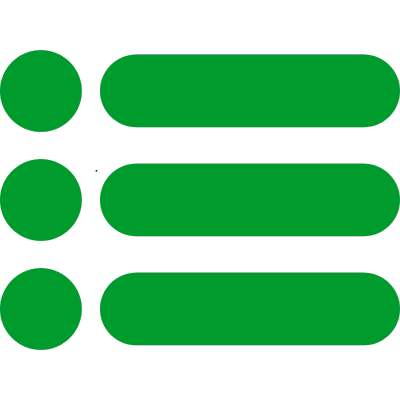

Planos

A área de Planos do FritaMente oferece diferentes opções de acesso para se adequar às suas necessidades.
Cada plano inclui uma combinação de recursos, como conteúdos exclusivos, tutoriais personalizados, e suporte prioritário.
Escolha o plano que melhor se adapta aos seus objetivos de aprendizado e tenha acesso a uma experiência completa e enriquecedora na plataforma.
Suporte
A área de Suporte do FritaMente oferece assistência rápida e eficiente para os usuários. Seja para solucionar dúvidas, resolver problemas técnicos ou fornecer orientações sobre a plataforma, nossa equipe está pronta para ajudar. Você pode entrar em contato pelo chat, enviar um ticket ou acessar uma base de conhecimento com perguntas frequentes para encontrar respostas rápidas e práticas.
Chat
A área de Chat do FritaMente é o lugar onde você pode interagir em tempo real com nossa equipe ou outros usuários. Tire suas dúvidas, receba orientações personalizadas e obtenha ajuda instantânea enquanto navega pela plataforma. O chat está disponível para facilitar a comunicação e garantir que você tenha a melhor experiência possível durante o uso do FritaMente.
Categorias
A área de Categorias do FritaMente organiza todo o conteúdo da plataforma de maneira intuitiva, facilitando sua navegação. Aqui, você encontrará temas variados e agrupados por tópicos, como planos de estudo, ferramentas de aprendizagem, e recursos adicionais. Explore as categorias para acessar rapidamente o conteúdo que mais te interessa e personalize sua experiência de acordo com suas necessidades.